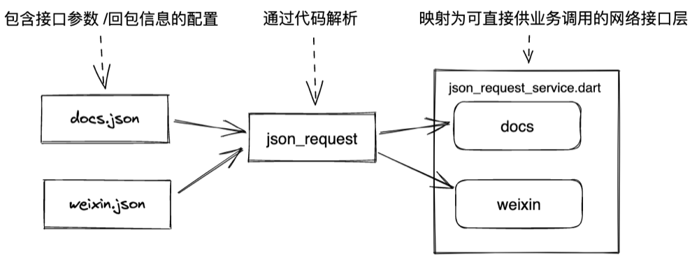
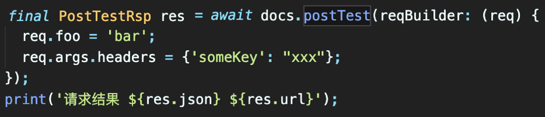
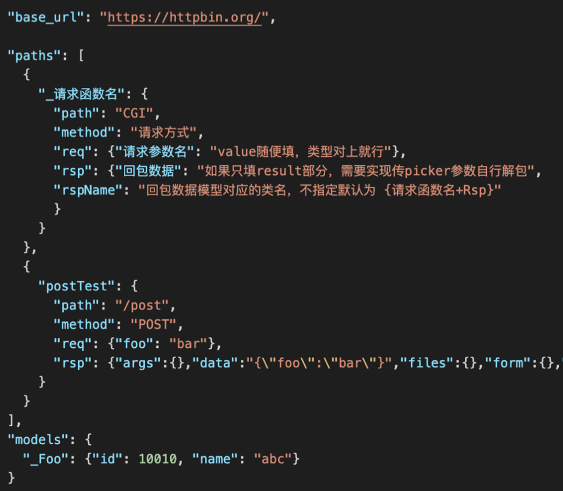
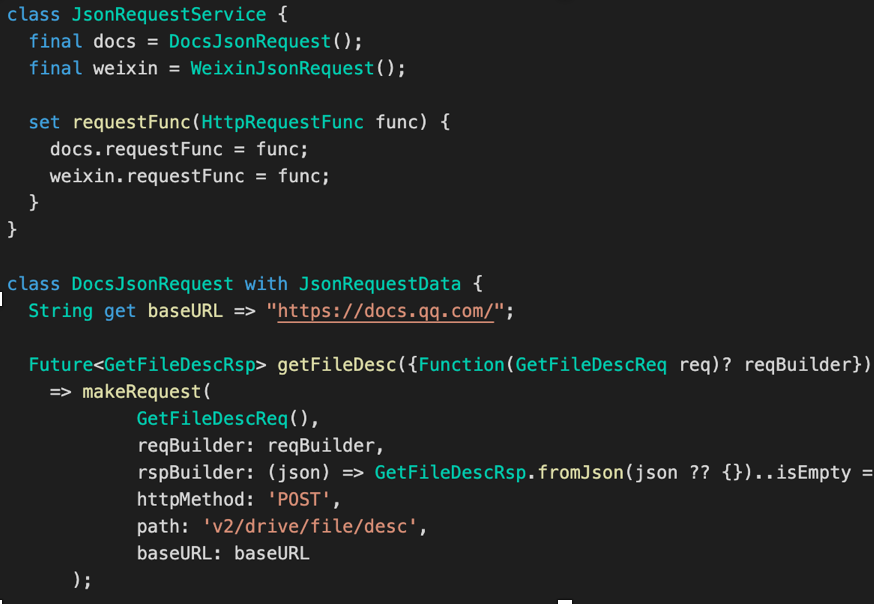

配置化管理Api接口代码
在app中，业务代码跟网络库之间通常会有请求接口这么一层。随着版本迭代，接口数量增加，对应的请求函数也会增加。实现配置化管理，用脚本生成这部分代码，能够节省编写请求代码跟数据模型类的时间，同时也能避免请求函数、模型类里耦合业务逻辑的情况，保证数据层的纯净。

Json & Model
模型类用于映射接口字段，通常来说只包含接口参数跟两个json的相互转换函数。模型类的自动生成各种语言都有很好第三方的实现，这里不赘述。
请求接口
简化一下请求接口：使用api命名，参数映射为一个对象. 函数内指定api路径，调用方只负责参数即可.
域名.接口名((参数对象) {赋值})

请求接口配置文件

配置文件包含三部分
1是baseURL
2是接口列表
3是自定义的数据类型
*其中接口列表的字段包括：CGI，发送方法，参数，回包数据。
rspName字段是可选的，用于指定回包对象的名称。
models列表用于自定义数据类型声明。声明之后在配置里面通过@符号使用.
最终生成的接口类： 